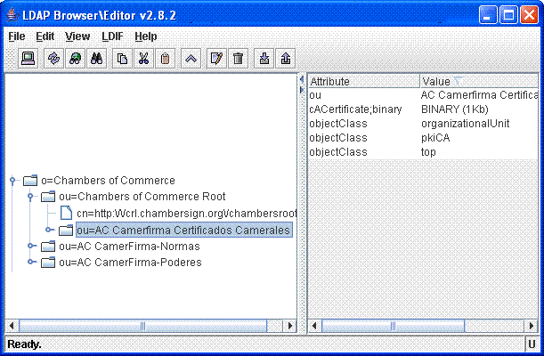
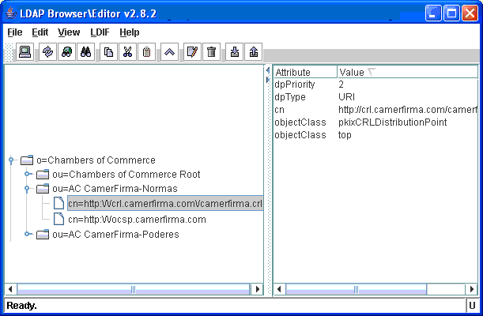
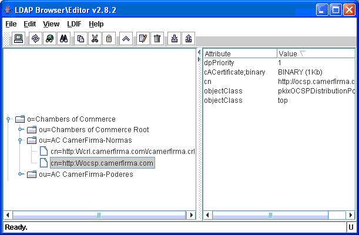

Table of Contents
Table of Contents
Welcome to the user manual of Open-VA 1.1.
This document explains how to install, configure and use Open-VA.
Open-VA is an open source that demonstrates how to implement a system for validating digital certificates and signed documents.
You may use it or extend it at your own.
![[Warning]](images/warning.gif) | Warning |
|---|---|
If you use Open-VA, or distribute it, we would appreciate if you include the powered by Open-VA logo (see below).
You can find this logo (

|
Open-VA uses a WebService as a front end and a very simple protocol as a transport layer.
You can use Open-VA for obtaining the WSDL file and build your
customized Open-VA clients.
This user manual gives you a complete overview of the Open-VA. It explains how you can install, configure and use Open-VA and it is assumed that you are familiar with the use of your operating system and concepts related to application servers, database servers and ldap servers.
The Open-VA user manual is comprised by the following parts:
Chapter 1 - Introduction: You are reading it
Chapter 2 - Installation: Defines platform requirements and how to prepare required components before building and installing Open-VA.
Chapter 3 - Using Open-VA: Describes the Open-VA protocol and how to use it.
Table of Contents
This chapter explains platform and system requirements and installation procedures. It also provides instructions for obtaining required components.
Open-VA is a multiplatform application that does not have special platform requirements.
Open-VA required components (not supplied) are:
Java Software Development Kit (JSDK)
Java Enterprise Edition Application Server (JEE server)
Lighweight Directory Access Protocol server (LDAP server)
Database server
A JSDK with version 1.4 is required. Unrestricted policy files must be installed and BouncyCastle must be registered as a security provider.
You must ensure that your system has an environment variable named JAVA_HOME
which has been defined with your JSDK installation root path.
| Warning |
|---|---|
This release does not work with another version of JSDK different to 1.4. |
You can download it from SUN download website.
After installing it remember to define environment variable JAVA_HOME as it was explained
in the above section.
By default JSDK download includes restricted policy files wich do not allow long size keys. In order to allow any size keys you must install unrestricted policy files.
Download them from JCE download website and follow instructions.
Open-VA requires BouncyCastle as the security provider. In order to do that you must follow this steps:
Download and install BouncyCastle libraries
Register BouncyCastle as a security provider
You can download BouncyCastle libraries (bcprov.jar and bcmail.jar)
from its download website. After that
copy both files on jre/lib/ext folder under your JSDK root installation path.
After downloading and installing you must register BouncyCastle as a security provider by editing
the security file of your JSDK. This file is java.security and you can
find it on the jre/lib/security folder under your JSDK root installation path.
| Warning |
|---|---|
SUN must be the first provider and BouncyCastle the second one. Look for security.provider entries and edit them as follows:
... other entries ...
security.provider.1=sun.security.provider.Sun
security.provider.2=org.bouncycastle.jce.provider.BouncyCastleProvider
security.provider.3=com.sun.net.ssl.internal.ssl.Provider
security.provider.4=com.sun.rsajca.Provider
security.provider.5=com.sun.crypto.provider.SunJCE
security.provider.6=sun.security.jgss.SunProvider
... other entries ...
|
A JEE 1.4 server compliant is required.
With this release of Open-VA a JBoss application server is used. If you would like to use another one, you will have to provide suitable runtime server descriptors.
You can download a JBoss server (4.02 or higher is recommended) from the JBoss download website.
No special LDAP server is required
If you do not have any LDAP server, you can use OpenLDAP. This LDAP server can be downloaded from OpenLDAP download website
After downloading and installing it, you must configure domain and credentials. This can be done by editing
its configuration file (slapd.conf) which can be found at OpenLDAP
installation root directory.
Edit suffix for domain data and rootdn and rootpw
for root user and password data.
Example of configuration setting the domain Open-VA.org and admin as the root user name and adminpwd as the root user password:
... other entries ...
suffix "dc=Open-VA,dc=org"
rootdn "cn=admin,dc=Open-VA,dc=org"
rootpw adminpwd
... other entries ...
![[Important]](images/important.gif) | Important |
|---|---|
Remember to use distinguished names for describing LDAP objects. |
No special database server is required.
If you do not have any database server, you can use MySQL. This database server can be downloaded from MySQL download website.
In order to acces to MySQL server from a Java application you must download the connector for Java. This file can be downloaded from MySQL connector website. This connector has to be in the classpath of the application as it is described below (Preparing JBoss)
| Warning |
|---|---|
At the moment of this document the MySQL connector for Java is still under development. Because of that do not try to install latest release of MySQL server and install version 4. |
Before installing Open-VA you must build it and prepare needed tools described above.
![[Note]](images/note.gif) | Note |
|---|---|
Some files for the tools can be found in |
Add java and user schemas to default configuration.
For doing that you must copy user.schema, which can be found at resources,
into schemas folder of OpenLDAP.
After that register new schemas in OpenLDAP by editing its configuration file slapd.conf
... other entries ...
include ./schema/java.schema
include ./schema/user.schema
... other entries ...
LDAP is used to store accepted Trust Anchors and intermediate Certificates Authorities (CA) in order to application can build the certification path and to known revocation status on a end-entity certificate.
You must store your own information as follows:
Creates an organization (entityClass = o) only for grouping certificates
Store certificates in organizational units (entityClass = ou) of type pkiCA and with a binary attribute named caCertificate with value the certificate.
Note It is recommended, but not mandatory, to respect the hierarchy of certificates in a human readable manner.
An example of CA entry:
Each CA stores revocation information. Revocation information includes CRL and OCSP revocation methods. For every CA several methods can be configured giving appropiate priority. For crl, just the complete url is needed. In case of ocsp method, besides server url, ocsp certificate must be included in order to check server response integrity.
An example of crl entry:
An example of ocsp entry:

You must create a database schema for using with Open-VA. In resources
you can find an script (bdd_epsilon.sql) with instructions for creating and populating tables.
We have made for you two scripts for most popular database servers: MySQL and Oracle.
In this script it is assumed a database schema with name EPSILON. You can change it but remember to update this script
| Note |
|---|---|
|
![[Caution]](images/caution.gif) | Caution |
|---|---|
You need a certificate file in |
In resources folder you have some files that must be copied
to JBoss folders.
Before copying them you must edit some properties with your own values:
Files that must be copied to
conffolderKeyStoreConfiguration.propertiesDo not worry about it
ValidationConfiguration.propertiesDo not worry about it
LDAPLoginConfiguration.propertiesProperty Name Property Description providerURL Your LDAP server address principal A user name with query access rights to LDAP server credentials User password pkiva.webservices.propertiesProperty Name Property Description signature.ks Your .pfxor.p12file namesignature.ks.password Key of your signature certificates file signature.alias.name User name of the certificate that has to be used for signing responses signature.alias.password User password of the certificate that has to be used for signing responses
Files that must be copied to
deployfolderopen-VA-XXX-db-ds.xmlNote Chose XXX from mysql o oracle based on your database server. If you have another database server you must create your own database connector.
This file configures a datasource for the database that has to be used in Open-VA. You must respect the JNDI name (EPSILON) and edit the JDBC properties with the correct values for your system.
open-VA-crl_ra-ds.xmlDo not worry about it
open-VA-ldap_ra-ds.xmlDo not worry about it
open-VA-ocsp_ra-ds.xmlDo not worry about it
You will find a script for building Open-VA.
Its name is build.cmd for Windows
and build.sh for UNIX based systems.
After executing this script Open-VA will be built as a JEE application with name open-VA.ear.
If JBoss server is not running start it.
If you have defined environment variable JBOSS_HOME you can execute build deploy
and Open-VA will be automatically deployed. If you do not have defined this environment variable,
you will have to copy by hand the file open-VA.ear, which has been created on dist
folder of your Open-VA installation, to the deploy folder of your JBoss
server installation. If you are using default server it will be: server/default/deploy.
After deploying you can see in the log of the server (log/server.log) that the file for the application
Open-VA (open-VA.ear) has been deployed and started.
Table of Contents
Open-VA is an open source that demonstrates how validation of digital certificates or signed documents can be performed.

As you can see in the above diagram Open-VA has a WebService as a front end. It accepts a request, process it, and returns a response.
You must build a webservice client in order to operate with Open-VA. For doing that you need the descriptor for the service (WSDL). You do not need to type it by hand because it can be obtained invoking Open-VA/ValidateWS?wsdl on the server.
In this release of Open-VA only one method is available: validate.
This operation accepts a single XML document containing the request and returns
another xml with the response.
| Note |
|---|---|
Open-VA returns a signed response |
The dtd for these xml are:
request
<!DOCTYPE request [<!ELEMENT request (elementId,elementContent,?)> <!ELEMENT elementId (#PCDATA)> <!ELEMENT elementContent (certificate|signedDoc|(signature,doc))> <!ELEMENT certificate (#PCDATA)> <!ELEMENT signedDoc (#PCDATA)> <!ELEMENT signature (#PCDATA)> <!ELEMENT doc (#PCDATA)>]>response
<!DOCTYPE response [ <!ELEMENT response (value, codeError?, status, statusReason?, signature)> <!ELEMENT value (#PCDATA)> <!ELEMENT codeError (#PCDATA)> <!ELEMENT status (#PCDATA)> <!ELEMENT statusReason (#PCDATA) ?> <!ELEMENT signature (#PCDATA)>]>
You must create an xml on the request and parse the response after invoking
validate operation, according to dtd in the above section.
| Note |
|---|---|
Binary data such as certificates, signatures or documents are passed through the |
Three types of requests are allowed:
Certificate validation
You must fill certficate field on request
Detached document signature validation
You must fill signature and doc fields on request
Attached document signature validation
You must fill signedDoc on request
The response may be a little confusing because there are two output codes.
valueIndicates if the request document is well formed and can be processed.
Its values can be: Refused, Failure or Success
You must care with this response attribute because a Success does not mean that validation is correct. It does mean that request is accepted to be processed.
In the event of a value of Refused or Failure the field codeError gives you more information.
statusIts values can be: Valid or Invalid
A value of Valid indicates that validation has been succeeded
In the event of an invalid validation the field statusReason gives you more information.